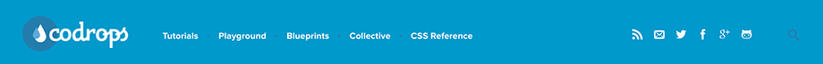
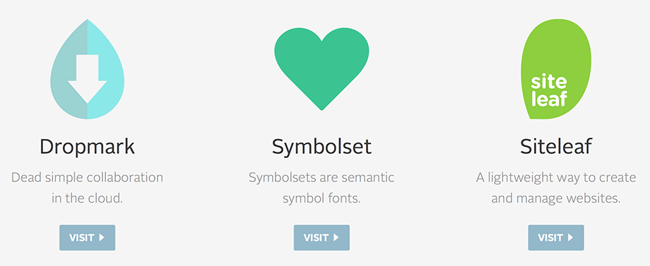
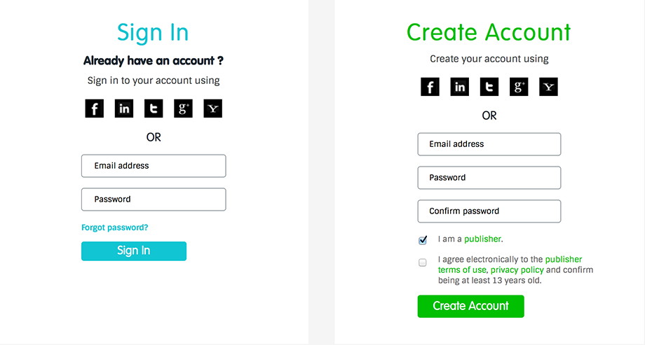
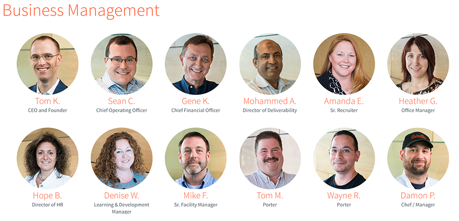
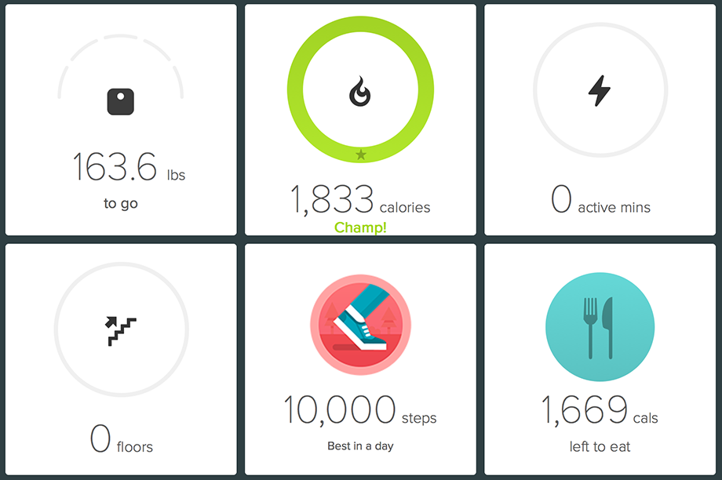
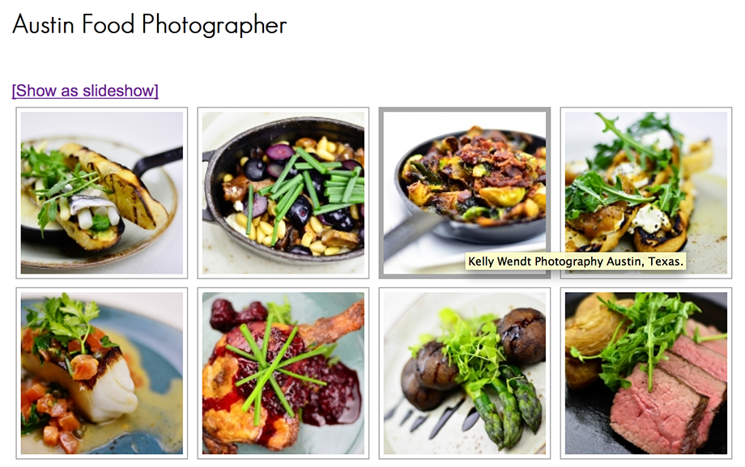

Pasquale Palazzolo

I'm a NEARLY 40-year old Jedi Master of Email Design. I've been a front-end developer for MindComet (R.I.P.), Florida Hospital Medical Group and am currently taking up residence as a front-end email developer for TravelClick. You haven't experienced the black magic of web design until you've reverted to table layouts and hacks to make these emails work across all clients and browsers. It's a fun but frustrating challenge at times.
Creativity runs in my blood. I'm the son of a music teacher. My father taught me piano and singing and I was his student during my high school years. I also played and marched in band on Clarinet (Bass Clarinet during concert season). In my life, I have been a magician, balloon artist, professional chef, and theme park/convention singer. I also sang operatic tenor for nine seasons with Orlando Opera Company. After working nine years as a database administrator and a mortgage closer, I decided I was overdue to return back to a creative role and self-learned web design and development through reading and online classes.
Little Wooke is the freelance collaboration my friend, Sean, and I have been trying to get off the ground. We have been doing work for clients and, unfortunately, have not developed our own website yet. We both work full time and our focus has been prioritized toward our day jobs, freelance jobs and families. This project will be a great start toward piecing together a library for our personal use.
On a personal note, I currently reside just north of Orlando proper. I'm the single dad of one 8-year old Padawan Learner and a seasoned Star Wars geek dating back to 1977 when I first saw the saga at the ripe old age of two. I started at Full Sail in July of 2014 to finally obtain my B.S. Degree in Web Design and Development in an effort to help me advance in this line of work.
Component 1: Header
Source: Codrops
Target Audience
The Codrops website is targeted toward web developers seeking to increase knowledge in the creation of various web development and design techniques. Average age group for web designers/developers range from age 20 to age 54.
Client/User Needs
While other elements of the Codrops website give a user a sense that the client aims to increase revenue, the header alone does not. The navigational items tell the user that this is more of a community outreach toward people seeking to increase their knowledge in making various website components.
Critique
This header for Codrops uses two primary, contrasting colors for the theme. There's a light blue background with white text that changes to a darker blue upon hovering. This gives the user a clear visual of what they're about to select. The blue offers feelings of stability and integrity while the white gives off feelings of cleanliness and simplicity. The logo is located at the top left where most readers will look first being that the eyes read from the top left of the page to right and continue down to the bottom right where the page ends. The user sees the logo first and will move right through the navigation options to the social icons and finally to a light blue magnifying glass indicating a search option. The subtle use of blue bullets between each of the navigation elements help in keeping them equally spaced from one another. There is one font used for the header navigation, Proxima Nova, and it works well combined with the white color keeping the font clean and easy to read.
View ComponentComponent 2: Front Page Teasers
Source: Oak.is
Target Audience
Oak.is is a parent company that develops applications for web design development teams for collaboration purposes. Their tag line says it all: We make smart tools for productive people. This site and their applications are targeted toward teams of developers. Again, this is a group of professionals with ages that span from 20 to 54.
Client/User Needs
The focus of the Oak.is website is revenue. Each of the teasers leads to a different website where developers can try out light versions of each application but will need to purchase higher levels in order to have full access to all of the available tools.
Critique
These three teasers are easily noticed. The images and buttons have hover states and both link out to the respective application website. Two font colors are used across the chosen serif fonts. A dark black to create bold headers that stand out and a subtle, soft grey for body copy for preview descriptions of each application.
View ComponentComponent 3: Full-Screen Background Image
Source: Barrel

Target Audience
Barrel is targeted toward organizations seeking better digital marketing strategies. The age group for this is not specific.
Client/User Needs
When you visit BarrelNY.com, you can easily see that there's a strong focus on customer service. While I think revenue is a goal, there are no links on the website for direct online purchasing of services. There's a strong focus on who Barrel is and what services they provide. Additionally, they want clients/users to know all of the cool things inside their office, what social events they participate in and who their team is comprised of.
Critique
The pages of this site that have full screen background images really stand out. They feel spacious and it's easy to see the centered header text as the main focus with an afterthought comprised of a smaller text CTA.
View ComponentComponent 4: Log In/Registration Form
Source: ShareThis
Target Audience
ShareThis offers solutions to those who want to make the world more connected. Targeted toward corporations or the individual publisher, the age range can be pretty wide but is likely to be for audiences between ages 13 and 50 seeking a better sharing solution online.
Client/User Needs
At first it's clear that ShareThis offers a free solution to users through their call to actions offering code for their application for free. This makes the site feel like it has a focus on customer service and community. When digging a little deeper, there's a contact form for those seeking results with digital campaigns. Pricing and services are not clearly outlined but there's a feel that revenue is one of the client goals and will be discussed after a user submits a form showing their interest.
Critique
The login/registration form is very clear and easy for those signing in or signing up for the first time. Each form has a different color header that coincides with the color of the button at the bottom. Minimal subheaders and body copy quickly explain who each form is for. They offer a variety of ways to sign in/sign up either through directly filling out the form fields and clicking the button or by using a selection of linked social networks. There's a clickable solution for users who have forgotten their password and this is a necessity for any site with a login/member section. The create account form also has two checkbox requirements making it clear that you must be a publisher and at least over the age of 13 to utilize the services ShareThis offers.
View ComponentComponent 5: About Us
Source: AWeber
Target Audience
AWeber is targeted toward individuals and corporations. The targeted age group should be for all ages 18 and up.
Client/User Needs
AWeber is a revenue-based business selling email marketing expertise. Users visiting the site can find company information as well as products and services.
Critique
The About Us component uses several font colors. The multicolors are used for headers and the grey for the body copy. The use of a variety of colors makes for nice, bright, noticeable headers to break down the departments at Aweber. The grey font is truly secondary to the headers. The about us component full of smiling faces of each employee really creates a welcome feeling.
View ComponentComponent 6: Call to Action Component
Source: Fitbit
Target Audience
Fitbit is targeted toward clients looking to closely track their health. Age groups range from 16 and up.
Client/User Needs
Client goals are focused on revenue, customer service and community outreach. Users on Fitbit find a good deal of information, new fitness products to purchase and a community of peers trying to get in more steps, exercise and monitor calories.
Critique
These call to actions each have a specific role. Users are getting so much information about themselves here and it's clearly displayed. I like how the font size is quite large on the most important piece of information in each box. Icons and status monitors let users know how far they've gone and how much is left to go to reach goals like steps, stairs, calories and more. Fitbit makes use of bright colors for their icons and to express excitement in text areas.
View ComponentComponent 7: Image Gallery Component
Source: Kelly Wendt Photography
Target Audience
Image galleries have a variety of audiences young and old. Photographers and artists would use these to display their craft for customers to see.
Client/User Needs
There are endless possibilities for a component like this and it's nice for both the client and the user that it can be viewed on various devices due to it being responsive.
Critique
I know that I don't want my mobile experience with a website to suffer due to smaller screen size and it's great that this particular gallery accomodates all users regardless of device. This component can easily be set up. HTML only requires two nested divs with an image inside the innermost div. The rest is taken care of by CSS. Adding some light Javascript helps make it accessible for those with touchscreen devices. This shouldn't take long to modify based on the theming of the website for each client.
View ComponentComponent 8: Rotating About Us/Team Component
Source: Envy Labs

Target Audience
Brides & Grooms, Event coordinators, corporations, entertainment companies, virtually anyone has a need at some time for a photographer. The site is likely targeted toward those between the ages of 18 and up.
Client/User Needs
I would say that the client is focused on revenue through use of her photography talents. Users to the site will come here wanting information and visuals like biography information/experience and image galleries showcasing the photographer's work.
Critique
I like that this image gallery is not flashy or heavy on animation. There are no fonts used. This client went with square thumbnails with a little white padding and a medium grey border. When users hover, the image is surrounded by a thick, lighter grey border so they can see there's an action involved with viewing the image larger. It's lacking in text instructions that instruct the user to click to open an image but we're in a time when most web users are familiar with this type of functionality. Users also get a pop-up text description in a yellow box when they hover. The description font is the browser default font rendered via the title tag and is not styled as it is not customizable.
View ComponentComponent 9: Rotating Banner Component
Source: WhoIsCarrus.com

Target Audience
The old standard. The rotating banner has applications with a wide variety of audiences. It's big in most cases so it will be noticeable to young and old alike. Medical patients, travelers, bargain hunters and many others will find this display helps point out some major items they should be aware of. It's a large call to action in a sense.
Client/User Needs
I've seen rotating banners used for hospitals, hoteliers, entertainers and more. This is a great way for a client to display roughly two to three items of importance before the user starts scrolling below the fold. By placing links or buttons on the banners it calls the user to click the banner and directs them to the page the client wants them to take notice of. According to one article, eye tracking and A/B testing found that users don't interact with rotating banners. It goes on to even say that they're found to be annoying. However, this still proves to be an easy method for clients to advertise multiple items on a single page and can be more cost effective with regard to time and money spent on development hours.
Critique
Scrolling banners are nice and there are a variety of effects for transitions. They can be made to fade or slide left. Apple made use of a slider some time ago that went in a variety of directions and even sometimes split in the middle. This particular rotating banner is designed by an Orlando agency that I've done some freelance email work for and hope to work with again in the future. Upon entering the site, the banner transitions to new slides on a timer. At the bottom are two circular buttons where the user can manually transition to the next or previous slide without waiting on the timer. It does seem that once the user clicks one of the navigational buttons on the banner, the timer stops and does not transition to any additional slides. I'd like to see if I can reinstate transitions after a user has stopped manually clicking.
Reference: http://northerndiv.com/do-rotating-banners-work/
View ComponentComponent 10: Hoverable Follow/Social Icons
Source: Traveling Children Project

Target Audience
This component can be targeted specifically toward online users young and old seeking to follow a person or company online.
Client/User Needs
For the client, this is a great tool to entice the user toward continuing to see what is happening with them. Whether it's status updates on Facebook, Twitter, reviews on Yelp and Tripadvisor for restaurants and hoteliers, many clients and users will find a user for this component.
Critique
This follow component on Traveling Children Project is themed to match this site for parents and children but the simplicity of it being icons that swap colors upon the user hovering makes it easy to modify depending on the client needs or target audience. While these icons are widely used on nearly every site that I find myself visiting, it's said they distract from the primary call to action and essentially remove a user from your site. I still feel these icons won't be going away any time soon as we continue to progress into a world where the idea of sharing is considered free advertisement. I tend to wonder if we will ever see this trend go away. Until then, most clients want this on their websites, email campaigns and even in printed materials.
Reference: https://boagworld.com/design/social-media-buttons/
View Component